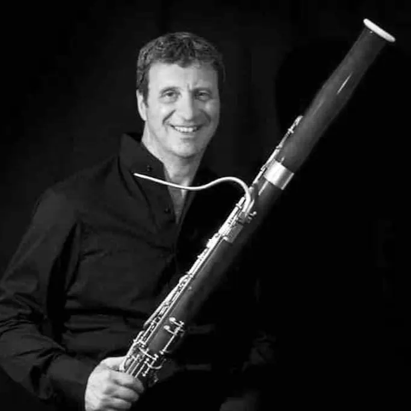
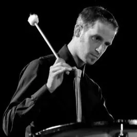
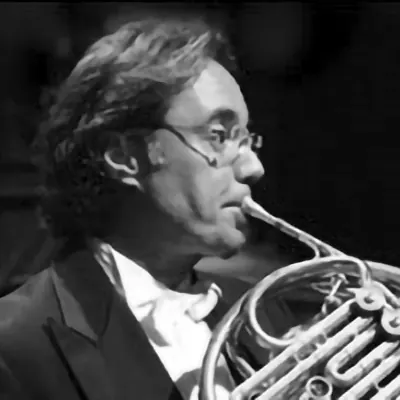
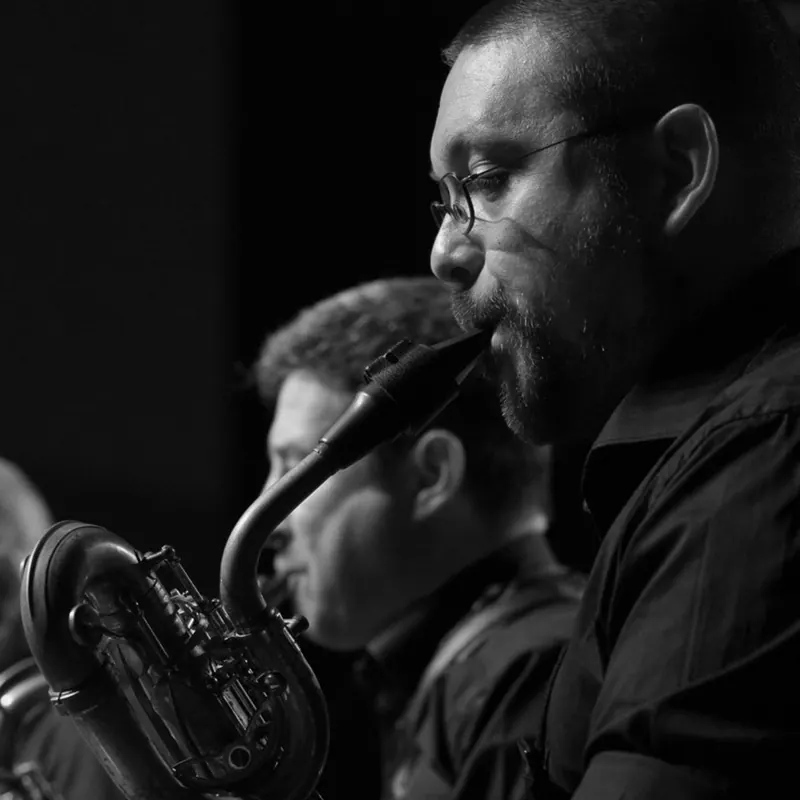

Musica d'assieme

Categoria D: Musica d'assieme
(fino a dieci elementi)
- Categoria unica Durata massima 15 minuti
La prova sarà composta da un programma a libera scelta della durata massima complessiva come sopra descritto.
La Commissione

Luigi Tedone
Luigi Tedone compie gli studi musicali presso il Conservatorio N. Paganini dove si diploma nel 1985 con il massimo dei voti. Successivamente si perfeziona a Torino con il M° V. Menghini.
Nel 1987 con l’Orchestra Filarmonica Italiana inizia la sua esperienza in orchestra come Primo Fagotto partecipando a importanti stagioni in Teatri italiani e festival internazionali: Lucerna, Locarno, Fermo, Montecarlo.
Frequenta la Scuola di Alto perfezionamento musicale di Saluzzo sotto la guida del M° Rino Vernizzi.
Nel 1990 vince l’audizione come Primo Fagotto presso l’Orchestra RAI di Torino e l’anno successivo il Concorso come Primo Fagotto al Teatro Carlo Felice dove tuttora è impegnato nell’attività.
Ha suonato con i Direttori d’orchestra: Y. Aronovich, L. Maazel, M. W. Chung, C. Hogwood, Sir N. Marriner, K. Petrenko, F. Luisi, J. Jones, A. Pappano, G. Bertini, D. Oren, G. Rozdestvenskij, Lu Ja, J. Mena.
Ha collaborato con l’Orchestra della Svizzera italiana, il Teatro Regio di Torino, l’Orchestra Internazionale d’Italia, i Solisti di Genova e con l’Orchestra da camera Teatro Carlo Felice come solista.
In formazioni cameristiche: Quintetto, Ottetto, Trio di fiati e pianoforte ha eseguito numerosi concerti conseguendo premi in Concorsi Nazionali ed Internazionali (Stresa, Moncalieri, Porcia e Viareggio).
Ha effettuato registrazioni discografiche per la Dynamic, ARTS, EGF, Videoradio.

Luca Campodonico
Nato a Rapallo (Ge), intraprende fin da bambino lo studio del pianoforte e nel 2004 consegue il Compimento Inferiore di Pianoforte Principale presso il conservatorio A. Vivaldi di Alessandria come studente privatista. Nel 2008 consegue la Laurea di primo livello in Ingegneria Navale.
Dal 2005 frequenta il corso ordinamentale in Strumenti a percussione presso il conservatorio N. Paganini di Genova prima sotto la guida di Andrea Pestalozza, poi di Maurizio Ben Omar con il quale ha conseguito il Diploma nel 2012. Nel 2014 consegue con il massimo dei voti, presso lo stesso conservatorio, la laurea di Biennio Formazione Docenti e l’anno successivo l’abilitazione all’insegnamento. Nel 2016 risulta vincitore del concorso pubblico per l’insegnamento delle percussioni nelle scuole secondarie di primo e secondo grado. Nell’anno scolastico 2016/2017 è docente di ruolo di percussioni presso l’Istituto Comprensivo di Piazza Vittorio Veneto di Vigevano (Pv) e dal 2017 ad oggi ricopre lo stesso incarico presso l’I.C. Sampierdarena di Genova. Presso lo stesso istituto ha ricoperto il ruolo di docente esperto e docente tutor in occasione di corsi estivi finanziati dall’Unione Europea. Frequenta corsi di perfezionamento e masterclasses di percussioni orchestrali, timpani, percussioni storiche, percussioni cubane, body percussion, direzione di coro e di orchestre scolastiche. Svolge regolare attività concertistica come percussionista in formazioni orchestrali e cameristiche esibendosi in diverse città italiane ed estere tra cui: Roma al Palazzo del Quirinale, Lucerna presso la sala da concerto del Centro di Cultura e Congressi KKL, Londra nella Guildhall School of Music & Drama.
Danilo Marchello
Nato a Lavagna (GE) nel 1965, compie gli studi musicali al conservatorio Nicolò Paganini di Genova, diplomandosi in corno con Antonino Virtuoso.
Dal 1985 al 1988 suona con l’Orchestra Sinfonica della RAI di Torino. Nel 1989 vince in secondo premio, con il primo non assegnato al Concorso Internazionale per Corno di Porcia. Dal 1989 al 1999 è primo corno solista dell’Orchestra da Camera di Padova e del Veneto (Bruno Giuranna direttore artistico), dove affronta il repertorio solistico. Nella Stagione 1999 è primo corno ospite al Teatro Comunale di Bologna (Daniele Gatti direttore principale). Dal 2000 al 2005 è primo corno ospite al Teatro alla Scala di Milano (Riccardo Muti direttore principale). Nel luglio 2005 riscuote grande successo di pubblico e critica suonando il 2° concerto di Mozart a München, Hercules-Saal, e viene invitato per l’anno successivo ad eseguire sempre di Mozart la sinfonia concertante. Dal 2005 a oggi è primo corno dell’Orchestra del Teatro Regio di Parma (Bruno Bartoletti e Yuri Temirkanov direttori principali). In trio con Boris Belkin e Michel Dalberto, ha suonato in alcune delle più prestigiose stagioni cameristiche, di: Italia, Germania, Francia, Spagna, Nord e Sud America. Vincitore del concorso è Docente di corno dal 1993 al 2008 al conservatorio di Vicenza, dal 2008 al conservatorio della Spezia. Nel 2011 è invitato al festival di Aschaü (Germania) per suonare i quintetti di Mozart e Beethoven assieme a: Henri Sigfridsson (Pianoforte), Hans Jörg Schellenberger (già primo oboe orchestra filarmonica di Berlino), Corrado Giuffredi (clarinetto), Alberto Biano (fagotto). Incide Decca in quartetto con: Andrea Griminelli, Corrado Giuffredi e Rino Vernizzi. Attualmente affianca all'attività di solista e primo corno freelance, quella di direttore d’orchestra.
Giovanni Compiano
Nato a Chiavari nel 1981 compie gli studi musicali al Conservatorio "Giacomo Puccini" della Spezia diplomandosi in Sassofono nel 2007.
Sin da giovane ha coltivato la passione per il mondo bandistico e la musica d'assieme grazie all'energia trasmessa da maestri come Luciano Famiglietti e Giuseppe Oliveri. Dal 2000 al 2007 suona con l'"Every Time Saxophone Ensemble" sotto la direzione dei maestri Marco Falaschi ed Alessio Bacci esplorando attraverso l'adattamento per ensemble di sassofoni il repertorio dal rinascimentale al contemporaneo. Dal 2007 suona regolarmente con la "Tigullio Jazz Big Band Orchestra", sotto la direzione del maestro Danilo Marchello, che ha ospitato musicisti del calibro di Dado Moroni, Mattia Cigalini, Flavio Boltro, Andrea Giuffredi, Bebo Ferra, Fabio Morgera, Andrea Tofanelli, Tommaso Perazzo. Dal 2020 suona con la formazione "L'Insolito Ensemble", formazione cameristica dall'organico non convenzionale, con cui affronta, tramite arrangiamenti ad hoc, il repertorio dal classico al leggero, passando per le musiche da film e gli evergreen. Dal 2022 suona con il "AHUM 7TET" alla ricerca della musica di Charles Mingus. Suona e collabora dal 1995 con le principali bande musicali del levante ligure con l'intento di favorire la diffusione della musica soprattutto tra i più giovani. Nel 2014 fonda assieme ad altri tredici soci volenterosi il "Corpo Bandistico di Casarza Ligure e della Val Petronio" e da allora ne è il presidente.